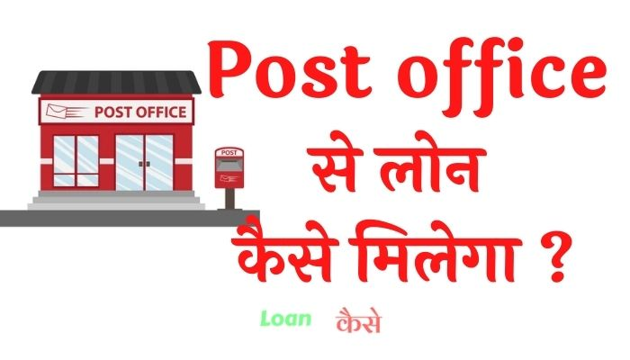

Post Office लोन योजना क्या है ?
दोस्तों पोस्ट ऑफिस लोन योजना भारतीय डाक विभाग द्वारा चलाई गई एक योजना है जिसमें आप बिना किसी गारंटी के लोन ले सकते हैं।
इस योजना के तहत आपको लोन लेने के लिए किसी भी तरह के कॉलेटरल की जरूरत नहीं पड़ती है लेकिन पोस्ट ऑफिस लोन योजना ऐसे ही किसी को नहीं मिल जाती है, इसके लिए पोस्ट ऑफिस में आपका खाता होना चाहिए और उस खाते में कुछ ना कुछ फिक्स डिपाजिट, इपीएफ अकाउंट होना चाहिए। कहने का मतलब यह है कि पोस्ट ऑफिस आपको आपके फिक्स डिपॉजिट के आधार पर लोन प्रोवाइड करती है आगे हम आपको बताएंगे कि आपको किस तरह से पोस्ट ऑफिस में लोन के लिए अप्लाई करना है।
Post Office से लोन क्यों ले ?
- एक विश्वसनीय संस्था है इसमें फ्रॉड होने का कोई खतरा नहीं रहता है।
- बैंक के मुकाबले कम ब्याज दर पर लोन मिल जाता है।
- बैंक के मुकाबले पोस्ट ऑफिस से लोन लेना आसान होता है कहीं भागदौड़ नहीं करनी पड़ती है।
Post Office से लोन लेने पर कितना ब्याज दर लगता है ?
दोस्तों पोस्ट ऑफिस से लोन लेने पर इसके ब्याज दर सिर्फ 1% ही लगते हैं, लेकिन आपको 1% सुनकर खुश नहीं होना है क्योंकि जैसा कि मैंने पहले बताया कि पोस्ट ऑफिस आपको आपके फिक्स डिपॉजिट और ईपीएफओ कॉलेटरल मान गए आप को लोन देती है।
इसीलिए जब आप पोस्ट ऑफिस से लोन लेंगे तो आपको उस लोन अमाउंट का इपीएफ पर मिलने वाला ब्याज दर नहीं मिलेगा और साथ में 1% ब्याज दर देना होगा।
कुल मिलाकर कहें तो अगर आपको इपीएफ पर 10 प्रतिशत ब्याज मिल रहा है तो आपको वह 10% नहीं मिलेगा और आपको 1% ऊपर से देना होगा तो कुल मिलाकर लोन का ब्याज दर 11% हो गया।
इस तरह से पोस्ट ऑफिस लोन योजना का ब्याज दर गिना जाता है।
डॉक्युमेंट क्या क्या लगेंगे पोस्ट ऑफ़िस लोन लेने के लिए ?
- पहचान के लिए आधार कार्ड, वोटर आईडी कार्ड, ड्राइविंग लाइसेंस कोई भी एक चलेगा।
- पैन कार्ड
- पोस्ट ऑफिस का बचत खाता पासबुक मूल प्रति और फोटो कॉपी के साथ।
- पासपोर्ट साइज फोटो।
- इपीएफ, फिक्स डिपाजिट पासबुक मूल प्रति ले जाना है। याद रहे कि आपका इपीएफ, फिक्स्ड डिपॉजिट 1 साल पुराना होना चाहिए तभी जाकर आपको लोन मिलेगा।
EMI कैसे calculate किया जाएगा Post Office लोन का ।
- किसी भी यह माय केलकुलेटर वेबसाइट पर जाकर आप यह माय कैलकुलेट कर सकते हैं इसके लिए आपको- EMI Calculator पर जाना है।
- उसके बाद यहां अपना लोन अमाउंट डालना है।
- उसके बाद कितने समय के लिए लोन लेना है, ब्याज दर कितना है वह डालकर सबमिट बटन पर क्लिक कर देना है।
- आपके सामने आपका यह मंथली इंस्टॉलमेंट कितने का लगेगा वह आ जाएगा।
{kind=link}

Post Office से Loan कैसे लेते हैं ? Step By Step प्रॉसेस
- सबसे पहले आपको अपने नजदीकी डाकघर में जहां आपका पोस्ट ऑफिस का बचत खाता हो चले जाना है।
- अब आपको लोन के लिए फॉर्म लेना है।
- फॉर्म को भर के सारे डॉक्यूमेंट इस फॉर्म के साथ लगा कर आपको पोस्ट ऑफिस में जमा कर देना है।
- कुछ दिनों के बाद आपके डॉक्यूमेंट अगर सही पाए गए तो आपके फिक्स डिपाजिट के आधार पर आपको लोन प्रोवाइड कर दिया जाएगा।
क्या मुझे पोस्ट ऑफ़िस से लोन मिल सकता है ?
अगर आपका खाता पोस्ट ऑफिस में है और उस खाते में आपने कुछ पैसे फिक्स्ड डिपॉजिट के रूप में, या इपीएफ के रूप में, एक बच योजना के रूप में पिछले 1 साल से पैसे जमा कराते हैं तो आपको निश्चित रूप से पोस्ट ऑफिस के द्वारा कुछ ना कुछ लोन मिलेगा ही। अब कितना लोन मिलेगा यह डिपेंड करता है कि आपका फिक्स्ड डिपॉजिट कितने का है।
क्या पोस्ट ऑफ़िस से FD पर लोन मिल सकता है ?
दोस्तों पोस्ट ऑफिस से आप किसी भी फिक्स डिपॉजिट या ईपीएफ पर लोन ले सकते हैं। आपका कोई न कोई बचत खाता पोस्ट ऑफिस में होना चाहिए चाहे वह किसी भी तरह का हो आपका पैसा अगर पोस्ट ऑफिस में जमा है तो उस पैसे के आधार पर आपको पोस्ट ऑफिस लोन देती है।
Post office Loan application form kaise download karen
पोस्ट ऑफिस लोन एप्लीकेशन फॉर्म डाउनलोड करने के लिए आप नीचे दी गई लिंक पर क्लिक कर सकते हैं और पोस्ट ऑफिस लोन एप्लीकेशन फॉर्म डाउनलोड कर सकते हैं।
Post office Loan application download karen
Postoffice se Online Loan Liya जा सकता है या नहीं?
नहीं आपको लोन लेने के लिए सीधे Postoffice ही जाना होगा।
Post office में सबसे अछी स्कीम क्या है?
Sukanya योजना इसमें सबसे ज़्यादा interest मिलता है।